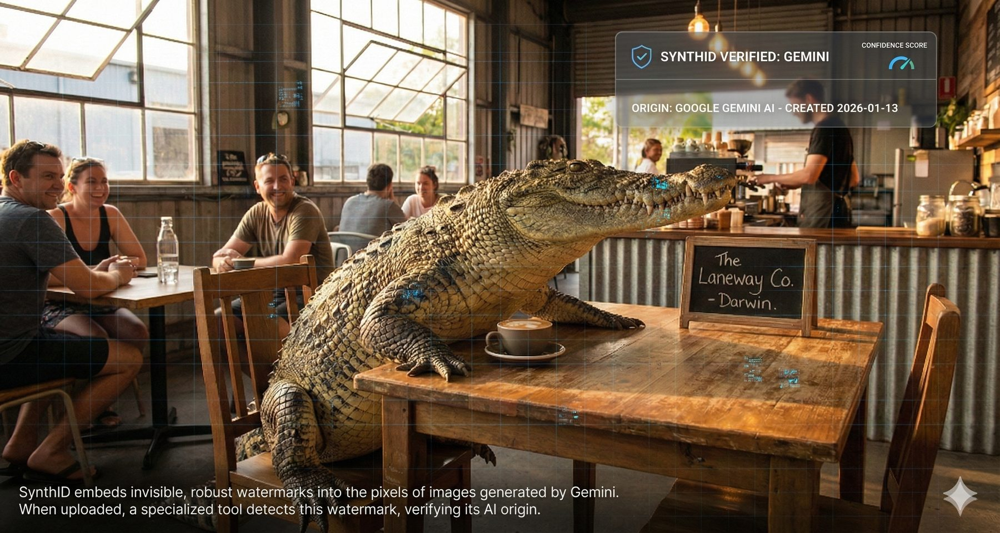
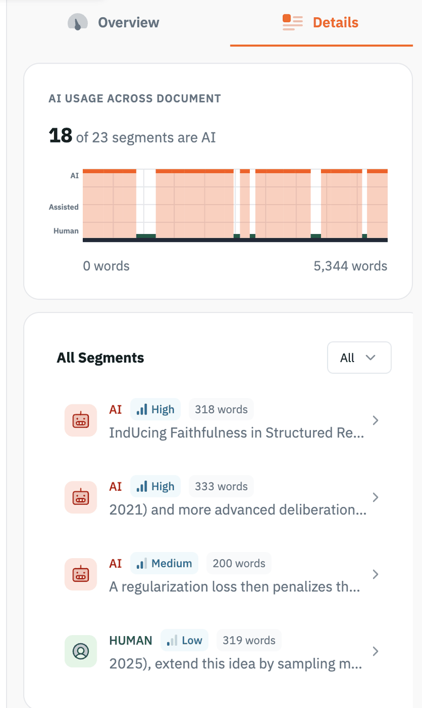
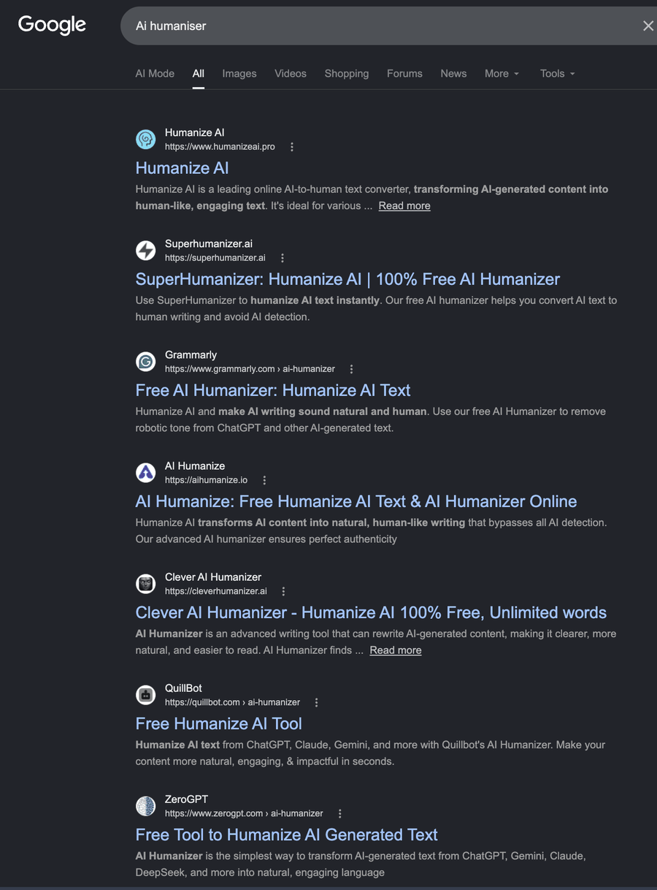

Can you tell if it’s AI?
Since August 2026, most major AI providers mark their output, and the biggest name of all, Claude, does it worldwide. This walks through what that actually means: why the mark is not a hidden character you can delete, how a model can be nudged toward a secret pattern of word choices, a second and different real system from Google called SynthID, where the mark breaks down, and what happens when a school or a hiring manager treats a detector's result as proof rather than a hint. It ends with a playground where you run the mark yourself and read the detector's numbers.
The rule that changed everything
Something changed in the second week of August 2026: text from Claude, wherever in the world you use it, started carrying a mark that identifies it as AI-generated. It was not Anthropic's idea alone. It was a deadline.
Two dates, three months apart
Dates from the European Commission's Digital Strategy site and Anthropic's own Help Center article "How Claude marks AI-generated content," both accessed 14 August 2026; corroborated by TechCrunch, The Register and Euronews, all published 11 August 2026.
What Article 50 actually requires
Article 50(2) of Regulation (EU) 2024/1689 (the EU AI Act), applying from 2 August 2026; text as published in the AI Act Explorer at artificialintelligenceact.eu, accessed 17 August 2026. The related recital, 133, discusses watermarks, metadata and cryptographic provenance as acceptable marking techniques.
The carve-out everyone will argue about
Keep that carve-out in mind for Module 04, where a spell-checked essay comes back flagged anyway.
The GDPR playbook, again
So there is a mark now. The next question is the one almost everyone gets wrong: what kind of mark is it?
Two things called "watermark"
A generated image and a piece of generated text are marked in two completely different ways, and mixing them up is where most of the online confusion starts.
Files and text, side by side
C2PA is the Coalition for Content Provenance and Authenticity, an open standard Anthropic uses for its generated image, audio and video files. Source: Anthropic Help Center, "How Claude marks AI-generated content," accessed 14 August 2026.
A third kind of mark: written into the pixels

For images, Google's SynthID takes the other road: instead of a metadata manifest riding alongside the file, it alters the pixels themselves, invisibly, in a pattern its detector can find later. Google says the mark does not change visible image quality and is designed to survive cropping, filters and lossy compression, the exact operations that strip a C2PA manifest. That is a vendor claim about robustness, but the design idea matters: a mark woven into the content survives what a mark attached to the content does not. Source: Google DeepMind, SynthID, deepmind.google, accessed 17 August 2026.
Hold that idea, because text watermarking applies the same philosophy to words: the mark is the content.
The Notepad test
So how does a model's own word choice become a trackable signature? That takes watching one get written, one word at a time.
Green words, red words
A language model does not plan a sentence. It predicts one next word at a time, weighs several good options, and picks one. A watermark intercepts that exact moment. Anthropic keeps its own version of this mechanism undisclosed, but the published research method it is built on, and this widget's simplified illustration of it, works like this.
Watch a sentence get written
The model writes one word at a time. Before each word, a secret key sorts every word in the language into a green list and a red list. The model still has its own favourite word, but the watermark pushes it to pick a green one. Do it in two steps: first see the options and the model's favourite, then reveal what the watermark actually made it choose. Watch the green picks build up while the sentence still reads normally.
Why nobody notices while reading
Method described here follows the published KGW scheme: John Kirchenbauer, Jonas Geiping, Yuxin Wen, Jonathan Katz, Ian Miers and Tom Goldstein, "A Watermark for Large Language Models," ICML 2023 (first posted to arXiv 24 January 2023). The demonstration above is illustrative; it does not reproduce Anthropic's actual undisclosed method.
A different real system: Google's SynthID
Google DeepMind's SynthID Text mechanism: Sumanth Dathathri, Abigail See, Sumedh Ghaisas and colleagues, "Scalable watermarking for identifying large language model outputs," Nature vol. 634, pp. 818 to 823, 23 October 2024. Announcement and detector portal: Google, "Google SynthID: AI content detector," blog.google, referencing the SynthID Detector portal launched at Google I/O, 20 May 2025.
Two real, different mechanisms, both aimed at the same idea. Neither is unbreakable. Here is where they actually fail.
Where the mark breaks
Forcing a model toward a secret word list only works where the model actually has spare choices to give up. That is not always true.
How much choice does the model actually have?
Does reformatting code erase the mark?
What a positive detection actually proves
Direct quote from Anthropic Help Center, "How Claude marks AI-generated content," accessed 14 August 2026. Note the irony against Module 01: assistive standard editing is the very case Article 50's carve-out excuses from marking, yet a provider marking everything marks it anyway.
A weak signal is still useful, until someone treats it as a verdict. That is exactly what has started happening.
When a detector result is treated as proof
A detector can tell you a piece of writing looks AI-generated. It cannot tell you who wrote it, how much of it was AI, or whether any rule was broken. The problem in this module is simple: some institutions have started treating that "looks AI" result as proof of cheating, and the numbers below show why that goes wrong. One way to hold the distinction: a detector is like a smoke alarm, it tells you something is worth a look, not that the house is on fire.
What happens when detectors are trusted at scale
Pangram, "Pangram Predicts 21% of ICLR Reviews are AI-Generated," 18 November 2025. Jabarian and Imas, "Artificial Writing and Automated Detection," NBER Working Paper No. 34223, 26 August 2025. Narayanan's calculation, posted publicly and widely discussed, cites 500 to 1,000 submissions per student over a four-year degree. University detector policies collected from published tracker sites, accessed 14 August 2026.
What a detector report actually looks like

This paper came back 18 of 23 segments AI across 5,344 words, with an overall verdict of "AI content detected, but not fully AI-generated": 78 per cent AI, 22 per cent human. Notice what a serious report does: it segments the document, grades its own confidence High / Medium / Low, hedges its verdict as belief rather than fact, and separates AI-generated from AI-assisted.
Notice also what no report can say: who typed, why, or whether the use was permitted. The strip shows a pattern in the text; everything after that is a human judgement.
Pangram ran this over roughly 19,000 ICLR papers as well as the 70,000 reviews. On the paper side, 61 per cent stayed mostly human-written, while 9 per cent were more than half AI. The whole corpus is browsable.
Report exhibit captured from the public database at iclr.pangram.com, 17 August 2026. Paper-side and review-side figures: Pangram, "Pangram Predicts 21% of ICLR Reviews are AI-Generated," 18 November 2025.
The vicious cycle: detect, humanise, repeat

Search "AI humaniser" and page one is an entire industry, promising to "bypass all AI detection" by rewriting AI text until the statistical fingerprint, watermark included, is gone. Rewriting the words is the one attack every text watermark and every stylistic detector is known to be weakest against, because the mark is the word choices; change the words and the mark goes with them.
Look closer at the names. Grammarly, QuillBot and ZeroGPT all appear, and each also operates an AI detector. The same market sells the smoke alarm and the silencer, and every round of the loop pushes machine text closer to human text, eroding the ground detection stands on.
Screenshot: Google results for "AI humaniser," captured 17 August 2026. Paraphrasing as the standard attack on watermark and detector schemes: analysed in the KGW watermark paper itself (Kirchenbauer et al., ICML 2023) and in Sadasivan, Kumar, Balasubramanian, Wang and Feizi, "Can AI-Generated Text be Reliably Detected?", arXiv 2303.11156, first posted March 2023.
Detection has an arms-race problem on one side. On the other, it has a subtler problem: the tool can change the writer.
The quieter problem: it changes minds, invisibly
Sterling Williams-Ceci, Maurice Jakesch, Advait Bhat, Kowe Kadoma, Lior Zalmanson and Mor Naaman, "Biased AI writing assistants shift users' attitudes on societal issues," Science Advances, 11 March 2026.
Why this matters
Sources used. Regulation and rollout: Article 50(2), Regulation (EU) 2024/1689, full text via the AI Act Explorer at artificialintelligenceact.eu, accessed 17 August 2026; European Commission Digital Strategy, "Transparency obligations under Article 50 AI Act" and "Strong backing for the Code of Practice on Transparency of AI-generated Content," accessed 14 August 2026; Anthropic Help Center, "How Claude marks AI-generated content," accessed 14 August 2026; TechCrunch, The Register and Euronews, all 11 August 2026. Image watermarking: Google DeepMind, SynthID, deepmind.google, accessed 17 August 2026 (robustness description is Google's own claim); the crocodile verification image is an AI-generated illustrative mock-up made for this deck, not a real detector interface. Mechanism: Kirchenbauer, Geiping, Wen, Katz, Miers and Goldstein, "A Watermark for Large Language Models," ICML 2023, arXiv 24 January 2023; Dathathri, See, Ghaisas et al., "Scalable watermarking for identifying large language model outputs," Nature 634, 23 October 2024; Google, "Google SynthID: AI content detector," blog.google. Fragility and low-entropy watermarking: arXiv 2405.14604 and arXiv 2512.14753, both on watermarking low-entropy generation. Detection and its limits: Pangram, "Pangram Predicts 21% of ICLR Reviews are AI-Generated," 18 November 2025, and the public browsable corpus at iclr.pangram.com, report exhibit captured 17 August 2026; Sadasivan, Kumar, Balasubramanian, Wang and Feizi, "Can AI-Generated Text be Reliably Detected?", arXiv 2303.11156, first posted March 2023; Google search results for "AI humaniser," screenshot captured 17 August 2026; Jabarian and Imas, "Artificial Writing and Automated Detection," NBER Working Paper No. 34223, 26 August 2025; Arvind Narayanan's public false-positive-rate calculation, referenced via Hacker News discussion, accessed 14 August 2026; university AI-detector policy trackers, accessed 14 August 2026. Psychological influence: Williams-Ceci, Jakesch, Bhat, Kadoma, Zalmanson and Naaman, "Biased AI writing assistants shift users' attitudes on societal issues," Science Advances, 11 March 2026. Deliberately not used: a claimed "style loophole" where a restrictive style prompt suppresses the watermark, and a cited British Journal of Educational Technology study on "strategy-graded reliance," both of which appeared in early drafting material but could not be traced to any real, findable source.
Try it yourself: the watermark playground
Module 03 showed one sentence being steered. This module hands you the controls. A small stand-in model writes a passage, with or without the mark, and a detector that has never seen the model scores it. Then you paste in human writing and watch the score fall back to chance.
What the detector counts
A worked number. Score 300 words with γ = 0.5 and chance predicts 150 green. Find 190 and the count sits 4.6 standard deviations above chance. The paper calls anything above z = 4 detected; an unmarked writer reaches that by chance about 3 times in 100,000.
Equation 3 and the z = 4 threshold: Kirchenbauer, Geiping, Wen, Katz, Miers and Goldstein, "A Watermark for Large Language Models," ICML 2023, sections 2 and 3.1.
The playground
Six things to try
Paste anything of your own into the text box as well. The detector scores any text; it never needs the model.
What this toy leaves out
Sources used in this module. Mechanism, Algorithms 1 and 2, Equation 3, the z = 4 threshold, the low-entropy caveat, the repeated n-gram remedy and the private-key discussion: John Kirchenbauer, Jonas Geiping, Yuxin Wen, Jonathan Katz, Ian Miers and Tom Goldstein, "A Watermark for Large Language Models," ICML 2023, arXiv 2301.10226, version 4, 1 May 2024. Human-written test passage: the history section of the Wikipedia article "Charles Darwin University," licensed CC BY-SA 4.0, as supplied on 30 August 2026. The two passages the stand-in model writes were written for this deck; the CDU history one restates the same Wikipedia facts. The panel layout follows the public "LLM Watermarking Playground" demonstration that runs a small Qwen model in the browser; this version replaces the model with the stand-in described above.